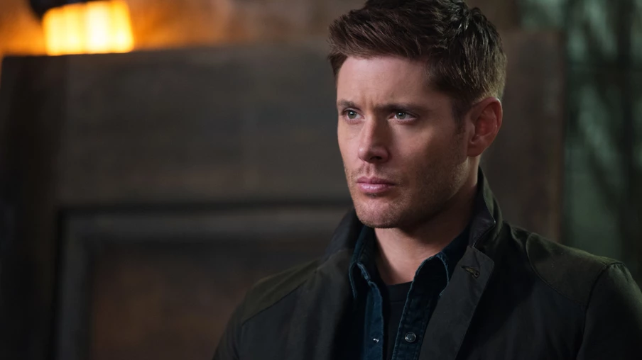
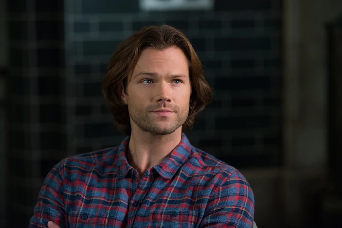
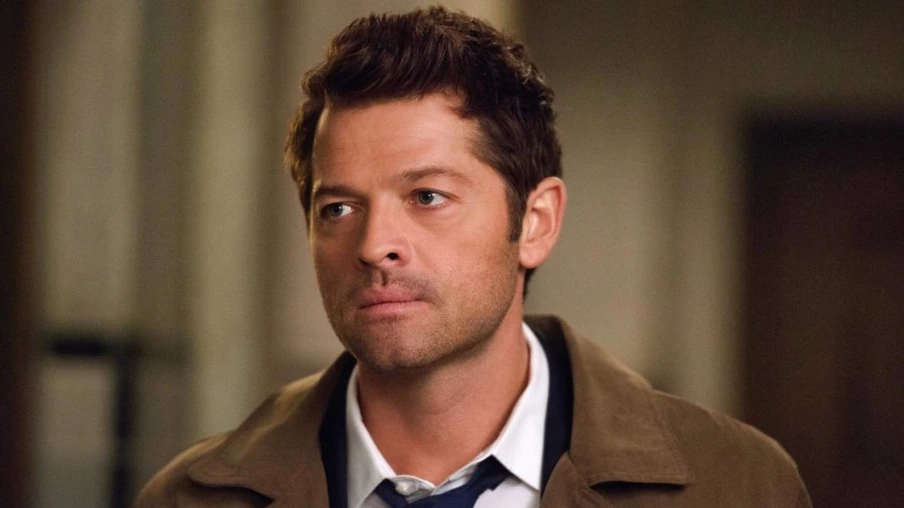

Dean Winchester (nascido em 24 de janeiro de 1979[2] - falecido em 2025[3]) era um humano e caçador, bem como membro dos Homens de Letras com seu irmão mais novo, Sam. Ele e seu irmão são membros das famílias Winchester[4] e Campbell.[5] Através de seu pai, Dean é o meio-irmão mais velho de Adam Milligan. Dean também é o navio destinado ao Arcanjo Miguel.[7] Ele e Sam também são filhos substitutos do falecido Bobby Singer. Dean é o melhor amigo do anjo Castiel, amigo próximo do falecido profeta Kevin Tran e aliado relutante de Crowley. Dean tem uma ex-namorada, Lisa Braeden,[10] com quem morou por um ano[11] quando pensou que Sam estava no Inferno. Ela tem um filho chamado Ben, para quem Dean atuou como pai durante aquele ano. O filho biológico de Dean era uma amazona chamada Emma. Ele também é o ex-aprendiz de Alastair. Tanto Dean quanto Sam foram criados na vida de caçadores por seu pai, depois que o demônio Azazel matou sua mãe. O principal papel de Dean na série é ser o autonomeado guardião de Sam e muitas vezes fazer de tudo para protegê-lo, independentemente do custo pessoal. Freqüentemente, nessas ocorrências, Dean se vê no centro de um quadro muito maior. Quando ele foi morto por Metatron enquanto usava a Marca de Caim, Dean retornou como um demônio e um Cavaleiro do Inferno leal apenas a si mesmo. Ele foi então curado por seu irmão usando sangue purificado. Eventualmente, a Marca foi removida, mas o preço foi que a Escuridão foi liberada no mundo, algo que Dean tentou evitar. Dean e seu irmão logo conheceram Deus, que voltou para ajudar a pôr fim ao perigo para o mundo. Durante esse tempo, Dean falou com Deus sobre não se sacrificar e com as Trevas sobre não destruir toda a realidade e os ajudou a se reconciliar. Como recompensa, Dean recebeu de volta sua mãe e pôde retornar ao seu estilo habitual de caça com sua família. Com sua mãe presa em uma realidade alternativa, Dean partiu com Sam, Castiel e o Nephilim Jack para resgatar Mary e reunir sua família, uma situação que se tornou mais urgente pela próxima invasão de uma realidade alternativa, Michael. Após a reunião de sua família, Dean concordou em se tornar o recipiente do Michael alternativo, a fim de acabar com Lúcifer de uma vez por todas. Ajudado por Michael, Dean enfrentou Lúcifer na batalha e finalmente matou o arcanjo rebelde e encerrou seu longo reinado de terror. Esta vitória durou pouco, pois Dean seria traído por Michael, que assumiu o controle total de Dean e se soltou no Universo Principal no corpo de Dean, seu único e verdadeiro recipiente. Michael o usaria por semanas antes de deixar o corpo de Dean sozinho por razões desconhecidas. Nos dias seguintes, Dean lutou para se reajustar para ser ele mesmo novamente enquanto tentava ajudar Sam nas caçadas. Porém, ele recuperou a vontade e se saiu melhor na caça, pois ele e sua família decidiram ir atrás de Michael e derrotá-lo. Dean também se relacionou com Jack depois de saber que sua saúde estava piorando. Durante um confronto com Michael, o Arcanjo retomou o controle de Dean após revelar que ele saiu para quebrar seu ânimo e trancou o caçador em seu subconsciente. No entanto, Dean consegue prender Michael em seu próprio subconsciente logo depois, mas fica preocupado com o que acontecerá se o arcanjo escapar. Após uma caçada, Dean perdeu a concentração em manter Michael preso, mas este último escapou da mente de Dean e tomou Rowena como um navio alternativo enquanto se vingava de Dean. No entanto, Michael foi morto por Jack, salvando o mundo de sua influência e libertando Dean de suas mãos. Quase cinco anos depois de derrotar o próprio Deus, Dean é morto pela última vez durante a caça aos Vampiros Mascarados. Dean aceita seu destino e sua alma vai para o céu, onde ele se reencontra com Bobby Singer e mais tarde com Sam, que viveu uma vida plena com um filho que ele nomeia em homenagem a Dean. Após sua morte, Dean faz um desvio pelo Multiverso enquanto dirige pelo Céu em busca de um mundo onde sua família tivesse uma chance de ter um final feliz. No processo, Dean descobre a existência dos Akrida, uma raça de monstros criada por Chuck como um dispositivo à prova de falhas para destruir tudo em caso de derrota. Desafiando as ordens de Jack contra interferências, Dean reúne o Monster Club para derrotar os Akrida, que ameaçam tanto o seu próprio mundo quanto o deles. Depois disso, Dean é devolvido ao céu por Jack, satisfeito por ter encontrado o que procurava e deixando seu diário e o Colt para seus pais.
Samuel William[1] "Sam" Winchester (nascido em 2 de maio de 1983) foi um caçador e também um Homem de Letras, junto com seu irmão mais velho, Dean. Ele é um dos principais protagonistas de Supernatural. Tanto Sam quanto Dean são parentes das famílias Winchester e Campbell - uma família Letters e uma família Hunting, respectivamente. A dupla também compartilha uma linhagem com Caim e Abel. Por causa disso, Sam estava predestinado a ser o verdadeiro receptáculo do arcanjo caído Lúcifer (enquanto Dean era de Miguel). Sam é amigo do anjo Castiel, do profeta Kevin Tran, do demônio Meg e da ex-amante que virou inimiga do demônio Ruby. Ele também é um aliado relutante ocasional do demônio Crowley e por um tempo foi forçado a ser um recipiente desconhecido e relutante para o anjo Gadreel (antes de expulsá-lo). Depois que o demônio Azazel matou sua mãe, Mary, Sam e Dean foram criados na vida de caçadores por seu pai, John. Sam deixou a vida de caçador para seguir a carreira de advogado e provavelmente teria se casado com sua namorada da faculdade, Jessica Moore. No início da série, Sam estava relutante em começar a caçar novamente. Quando Jessica foi morta, ele foi empurrado de volta à vida de caça. No entanto, ele tem sido repetidamente conhecido por tentar desistir da caça na esperança de finalmente ter uma vida normal como desejava. Depois que a busca de Sam para remover a Marca de Caim desencadeou as Trevas sobre o mundo, Sam foi forçado a enfrentar as consequências de suas ações. Para Sam, a situação piorou quando Lúcifer manipulou a situação para escapar na nave de Castiel. Sam ficou dividido entre usar Lúcifer para ajudar a combater as Trevas como Castiel desejava e seus próprios traumas e o desejo resultante de se livrar do arcanjo desonesto como resultado. Após a reconciliação das Trevas e de Deus, Sam foi sequestrado por agentes dos Homens de Letras Britânicos e torturado. Durante esse tempo, Sam enfrentou um reencontro surpresa com sua mãe ressuscitada, o retorno de Lúcifer ao mal e a atração das promessas dos Homens de Letras Britânicos de livrar o mundo dos monstros. A situação ficou ainda mais exasperada quando Lúcifer concebeu um filho Nephilim antes de sua aparente derrota e retornou à Jaula. Com o crescimento da ameaça dos Homens de Letras Britânicos, Sam foi forçado a assumir um papel de liderança para acabar com a ameaça, mas sofreu perdas enquanto lutava contra Lúcifer pelo controle de seu filho. Com as perdas de Crowley e Castiel e com Mary Winchester presa no Mundo do Apocalipse com Lúcifer, Sam lutou para encontrar uma maneira de resgatar sua mãe enquanto lidava com o filho de Lúcifer, Jack, e a crescente depressão de Dean, auxiliado pela subsequente ressurreição de Castiel. Ele também foi forçado a enfrentar a ameaça do último Príncipe do Inferno, Asmodeus. No entanto, depois que Jack também ficou preso no Apocalypse World, Sam caiu em uma depressão própria, que só melhorou quando foi encontrada uma maneira de resgatar Mary e Jack. Com a crescente ameaça do Mundo do Apocalipse Michael, o retorno de Gabriel e a morte de Asmodeus, o foco de Sam mudou completamente para salvar sua família e acabar com a ameaça de Michael e Lúcifer de uma vez por todas. Depois de ser morto por vampiros no Apocalypse World, Sam foi ressuscitado mais uma vez por Lúcifer e relutantemente forjou uma aliança com seu antigo inimigo à luz da situação. A decisão subsequente de Sam de prender Lúcifer propositalmente no Mundo do Apocalipse novamente levou a consequências graves quando Michael e Lúcifer trabalharam juntos para alcançar o Universo Principal. Embora Lúcifer tenha sido finalmente morto por Dean com a ajuda de Michael, a vitória durou pouco para Sam depois que ele foi forçado a assistir seu irmão ser assumido por Michael, que foi solto no Universo Principal no corpo de seu único verdadeiro recipiente. Após a morte final de Dean, Sam vive uma vida longa, constitui uma família e eventualmente morre de velhice. Ele então se reencontra com Dean no Céu. Sam é muito forte mentalmente, evidenciado por sua capacidade de dominar a posse de Lúcifer. Tem sido argumentado que ele é o mais esperto ou mais inteligente dos irmãos Winchester, embora o próprio Sam discorde. Com o tempo, Sam resignou-se ao estilo de vida de caçador e sacrificou-se repetidamente por um bem maior, destacando sua natureza altruísta.
Castiel, muitas vezes abreviado para Cas,[1] é um poderoso anjo do Senhor que foi responsável por salvar Dean Winchester do Inferno,[2] sob o comando dos arcanjos. Era seu trabalho ajudar a evitar que Lilith quebrasse os 66 Selos que, uma vez quebrados, libertariam Lúcifer de sua jaula[3] no Inferno. Assim que Castiel soube que os anjos queriam libertar Lúcifer de qualquer maneira, ele desafiou seus irmãos angelicais e morreu tentando ajudar Dean a impedir que Sam Winchester quebrasse o último selo. Depois de ser morto pelo Arcanjo Rafael, Castiel foi ressuscitado por Deus e se juntou a Sam, Dean e Bobby Singer em uma missão para evitar que os irmãos se tornassem os vasos de Miguel e Lúcifer. Castiel seria mais tarde morto por Lúcifer, mas suas ações permitiram que Sam prendesse os dois Arcanjos. Com o Apocalipse evitado, Castiel foi novamente ressuscitado por Deus com novos poderes,[5] sendo promovido a Serafim. Ele então iniciou uma guerra civil no Céu para evitar que Raphael reiniciasse o Apocalipse,[6] Acreditando que não poderia ser enganado por um demônio, Castiel se uniu a Crowley para reivindicar as almas do Purgatório.[7] Ele acabou traindo Crowley e absorvendo todas as almas, fazendo com que seus poderes atingissem um nível muito superior ao de um arcanjo, mas com um preço alto: os poderes que as almas malignas lhe concederam foram para a cabeça de Castiel, fazendo-o proclamar ele mesmo como o novo Deus.[8] Quando seu corpo começou a apodrecer, Castiel mais tarde concordou com o conselho de Dean para libertar as almas de volta ao Purgatório. Embora aparentemente bem-sucedido, descobriu-se que uma das entidades mais poderosas do Purgatório, os Leviatãs, agarrou-se a Castiel, dominou-o e assumiu o controle dele. Quando os Leviatãs partiram para assumir novas formas, Castiel foi dado como morto, mas sobreviveu – aparentemente ressuscitado por Deus mais uma vez. Mais tarde, Dean acidentalmente encontra Castiel como um curandeiro amnésico chamado Emmanuel. Depois de enfrentar a loucura e a experiência de Sam no Inferno para salvar os Winchesters e se redimir pelo que fez a Sam, Castiel ficou louco e entrou em coma. No entanto, ele desperta e sua sanidade retorna ao ponto em que um sinal foi enviado a todos os anjos sobre a descoberta da Palavra de Deus e a nomeação de um novo profeta.[11] Ele então ajuda os irmãos Winchester contra Dick Roman, apenas para ser transportado para o Purgatório com Dean. Enquanto Dean volta, Castiel não voltou com ele. Embora sua condição seja inicialmente desconhecida, é revelado que ele passou a maior parte do tempo fugindo dos Leviatãs e que não escapou do Purgatório com Dean, pois havia planejado ficar como forma de penitência. No entanto, ele acabou sendo libertado do reino dos monstros por uma incursão de anjos sob as ordens de um anjo misterioso, mas poderoso, chamado Naomi, reunindo-se aos irmãos Winchester e tentando se tornar um caçador. Mas depois de um longo tempo, Castiel descobriu que Naomi o controlava desde que o tirou do Purgatório e o obrigou a encontrar a tábua do anjo, a qualquer custo, chegando até a matar Dean. Depois de quase fazer isso, Castiel se juntou a Metatron quando o anjo o convenceu a ajudá-lo a fechar os portões do Céu. Então, depois de coletar o coração de um nephilim e o arco de cupido, Metatron é eventualmente capturado por Naomi, mas escapa e a mata, apenas para Cass descobrir a traição de Metatron e planejar fazer com que todos os anjos no Céu, mesmo os presos, caiam para Terra. Depois de ser destituído de sua graça por Metatron para expulsar todos os anjos do Céu, Castiel passa os próximos três meses na Terra como humano. Depois de ser capturado e torturado por um anjo chamado Malaquias, Castiel rouba a graça de Theo e retorna ao seu status original de anjo (anteriormente sendo promovido a Serafim). Castiel mais tarde ajuda Dean a expulsar o anjo Gadreel de Sam e cura as feridas de Sam. Depois que Dean sai com Crowley para encontrar uma maneira de derrotar Abaddon, Castiel também sai para começar uma busca por Metatron e Gadreel enquanto é perseguido por outros anjos, e eventualmente matando o líder rebelde Bartolomeu, ele assume o comando de sua facção. No entanto, um engano de Metatron o faz perder seu exército; em vez disso, ele se junta aos anjos Gadreel e Hannah para se infiltrar no Céu e destruir a tabuleta do anjo, cortando o poder de Metatron para permitir que Dean o mate. Embora bem-sucedidos, Dean e Gadreel são mortos, enquanto Castiel prende Metatron. Ele então deixou o Céu porque não queria ser um líder e estava morrendo devido à sua graça esgotada antes de Crowley salvá-lo com a graça de Adina. Desde então, ele recuperou o que restava de sua própria graça e restaurou o poder total e tornou-se um Serafim mais uma vez. Após a liberação das Trevas e o trauma que sofreu sob o feitiço de Rowena MacLeod, Castiel concordou em atuar como o navio para Lúcifer caminhar pela Terra mais uma vez para que Lúcifer pudesse lutar contra as Trevas. Castiel permaneceria como navio de Lúcifer por meses, emergindo apenas brevemente para salvar a vida de Sam e convencer os anjos a ajudar contra as Trevas.
